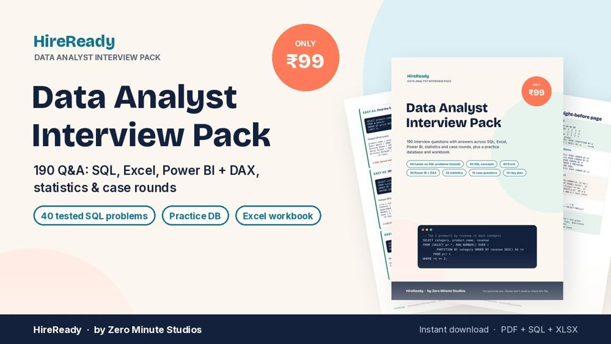

190 interview questions with clear answers across SQL, Excel, Power BI + DAX, statistics and case rounds, plus a practice database and Excel workbook to try every answer yourself.
Get the pack₹99 · instant download
We don't do refund & return ✌️

Easy to hard: joins, HAVING, CTEs, ROW_NUMBER, LAG, cohorts, pivots. Every query tested, with its real output.
WHERE vs HAVING, NULL traps, indexes, normalisation, star schema, OLTP vs OLAP.
XLOOKUP, INDEX-MATCH, SUMIFS, Pivot Tables, Power Query, dashboards. Practise them in the workbook.
CALCULATE, filter context, time intelligence, RANKX, RLS, performance.
A/B tests, p-values, outliers, cohorts, funnels, AOV, LTV.
“Sales dropped 20%”, guesstimates, dashboards, metric definitions, with model approaches.
Final-year students, freshers and career-switchers in India preparing for Data Analyst, MIS, Business Analyst and reporting roles, especially if you've finished a course and want to know what interviewers will actually ask.
Yes. It starts from SQL basics and builds up to window functions, then covers Excel, Power BI, statistics and case rounds in the order most fresher analyst interviews follow.
Standard SQL that runs as written in SQLite. Notes show the MySQL, PostgreSQL and SQL Server versions wherever date functions or LIMIT/TOP differ.
No. The Excel workbook works in Excel 2016+ and Google Sheets. The Power BI section explains each measure so you can talk through it even before installing Power BI Desktop.
Pay on our SuperProfile store and the download link appears instantly after payment. You get a PDF guide, a 1-page SQL cheat sheet, a .sql practice database and an Excel workbook.
No leaked papers. These are the patterns that come up most often in data analyst interviews, with honest, explainable answers.
Secure checkout on SuperProfile. The download link appears right after payment.
We don't do refund & return ✌️